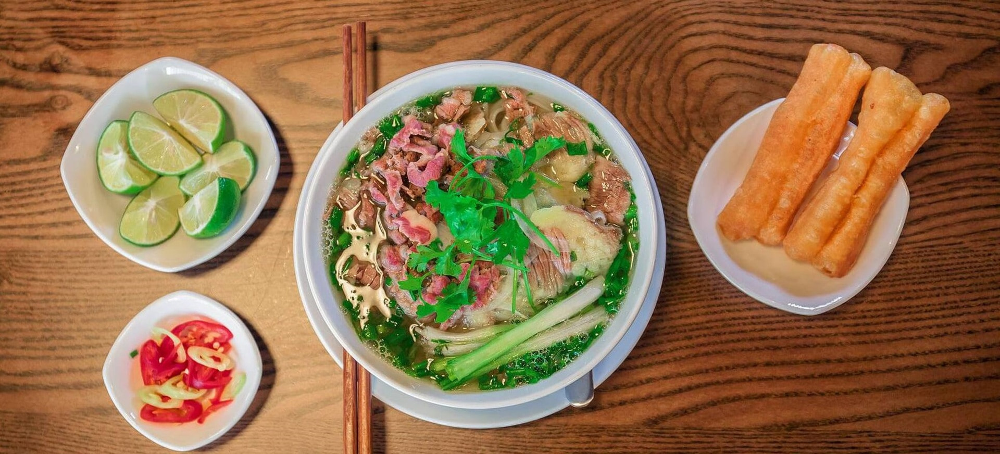

Phở Hà Nội là một món ăn truyền thống nổi tiếng của Việt Nam. Món phở xuất hiện vào khoảng đầu thế kỷ XX và nhanh chóng trở thành nét đặc trưng trong văn hóa ẩm thực của người dân Hà Nội.

Ban đầu, phở được bán bởi những gánh hàng rong trên các con phố Hà Nội. Theo thời gian, phở phát triển thành những cửa hàng chuyên nghiệp với nhiều cách chế biến khác nhau như phở bò, phở gà.
Ngày nay, phở Hà Nội không chỉ là món ăn quen thuộc của người Việt mà còn trở thành một biểu tượng văn hóa ẩm thực được nhiều du khách quốc tế biết đến.